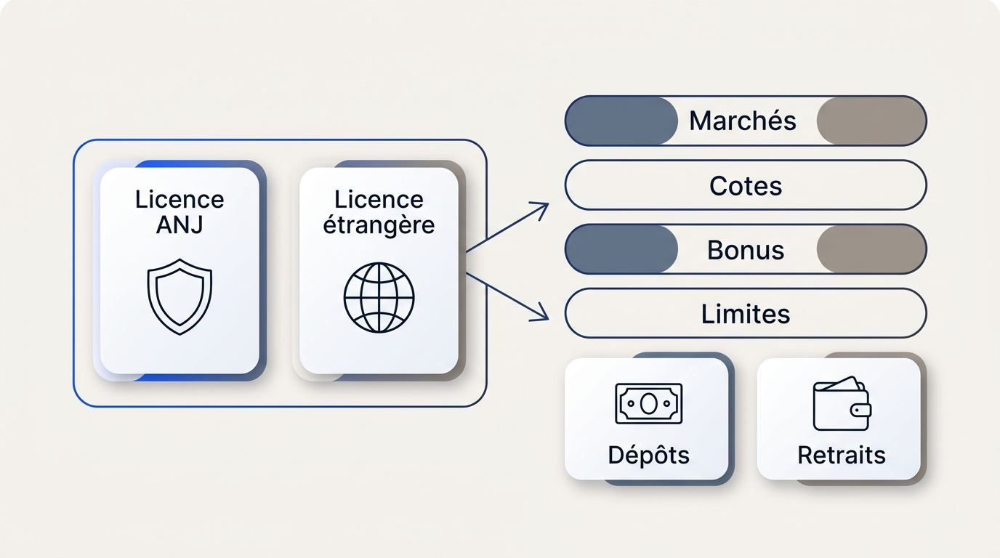
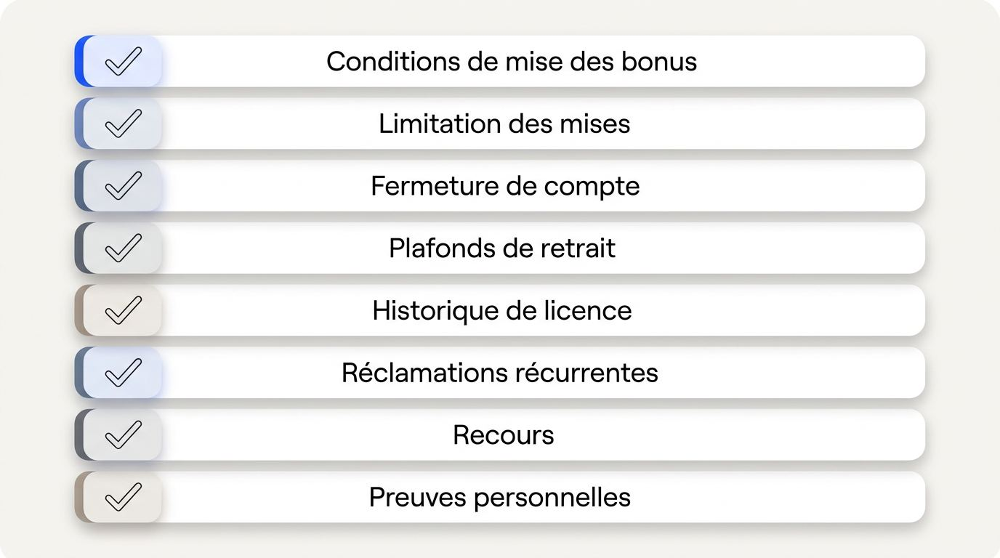
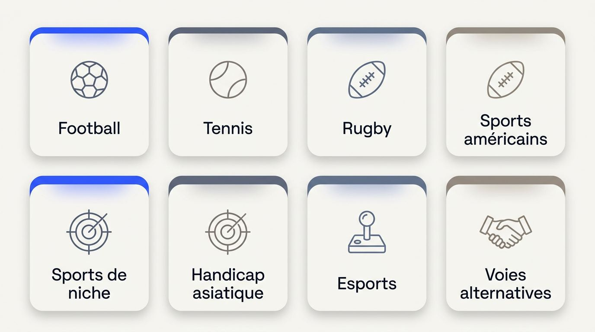
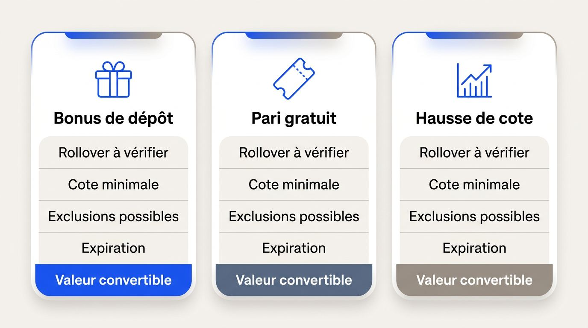
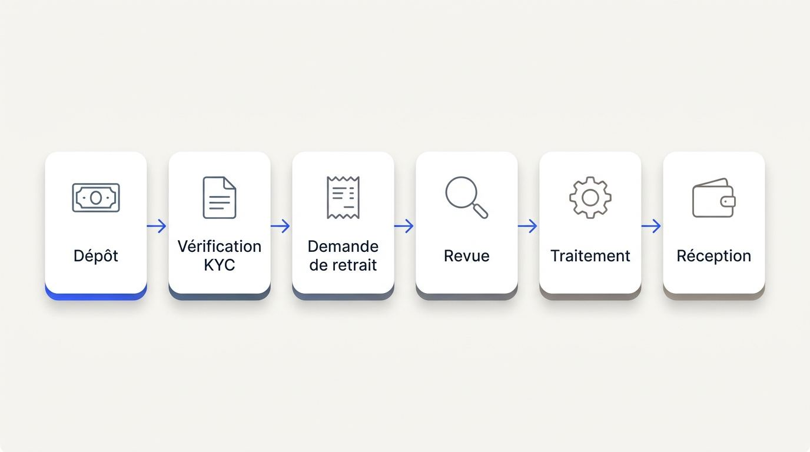

Vous cherchez un bookmaker étranger capable de couvrir vos marchés favoris sans compliquer vos dépôts ni vos retraits. Comparez d’abord les cotes réellement proposées, la profondeur des paris, les plafonds applicables et les règles du compte. Une offre généreuse perd vite son intérêt si vos gains restent difficiles à récupérer ou si votre moyen de paiement ne convient pas depuis la France.
Cette sélection est régulièrement revue et mise à jour.

Comparatif des offres disponibles
Les offres sont chargées automatiquement depuis la source du comparatif.
En quoi les bookmakers internationaux diffèrent-ils des sites agréés par l’ANJ ?
Les opérateurs agréés par l’ANJ et les bookmakers internationaux appliquent des cadres commerciaux et des règles de compte distincts, ce qui peut modifier l’expérience de paris disponible depuis la France. L’Autorité nationale des jeux, ou ANJ, supervise le marché français et a succédé à l’ARJEL dans ce rôle de régulation.
La comparaison entre un bookmaker étranger et un bookmaker français porte donc sur des éléments concrets. Les sites hors ANJ peuvent présenter d’autres marchés, formats de cotes, conditions promotionnelles ou politiques de limites. Les opérateurs français appliquent leurs propres obligations de contrôle, de catalogue de paris et de gestion des comptes. Aucun modèle ne répond aux mêmes besoins pour tous les parieurs.
Un parieur régulier qui suit des marchés spécialisés n’examine pas les mêmes critères qu’un utilisateur recherchant une interface française, des limites de dépôt définies ou un parcours de compte familier. Les écarts se mesurent d’abord dans le prix des paris, les bonus et les limites appliquées.
Pourquoi les cotes, les bonus et les limites peuvent varier
Les prélèvements, les contraintes de retour au joueur et les coûts de conformité influencent la manière dont les opérateurs fixent leurs cotes, structurent leurs bonus et déterminent leurs politiques de mise. Ces coûts diffèrent selon le pays de licence et le cadre appliqué aux paris internationaux.
La marge représente la part intégrée par l’opérateur dans un marché de paris. Une marge plus faible peut se traduire par des cotes plus intéressantes sur un même événement, sans garantir que les cotes des bookmakers étrangers resteront les meilleures sur tous les sports ou à tout moment. Il faut comparer le même marché, au même instant, avec la même règle de règlement.
Les promotions suivent la même logique. Un bonus peut comporter un plafond plus élevé, mais aussi des conditions de mise plus exigeantes ou des marchés exclus. Les limites de mise et les plafonds de gains peuvent également varier selon le sport, la liquidité du marché, le type de pari, le profil de risque et les règles internes du site. Les risques des bookmakers non régulés apparaissent surtout lorsque ces règles restent floues ou changent sans cadre publié.
Pour vos paris, retenez les conséquences suivantes:
- Comparez les cotes sur des sélections identiques, surtout si vous recherchez les meilleures cotes de paris sportifs.
- Calculez la valeur nette d’un bonus après ses exigences de mise, ses exclusions et son plafond de conversion.
- Consultez les limites de mise et les plafonds de gains avant d’alimenter un compte destiné à des mises régulières.
- Vérifiez que les limites de dépôt proposées correspondent à votre budget prévu.
Les critères à vérifier au-delà de l’offre affichée
Une offre attractive ne produit de valeur que si les cotes, la profondeur des marchés et les règles de compte correspondent à vos habitudes réelles de paris. Un montant promotionnel élevé ne compense pas une sélection insuffisante sur le sport que vous suivez ni des frais qui réduisent le solde utilisable.
- Cotes comparables: vérifiez les prix sur vos compétitions et marchés habituels, dans un format lisible depuis la France, plutôt que de vous fier à une promesse générale sur les cotes.
- Profondeur des marchés: contrôlez les ligues secondaires, les marchés avant match et les paris sur sports de niche que vous utilisez réellement.
- Handicap asiatique: ce type de handicap peut répartir une mise entre deux lignes de handicap et mérite une lecture précise de ses règles de remboursement ou de règlement partiel.
- Limites appliquées: rapprochez les limites de mise de votre fréquence de paris et du montant que vous comptez engager par sélection.
- Frais et disponibilité: examinez les éventuels frais, les règles de retrait et les restrictions de marchés avant le premier dépôt sur un site de paris.
Comment reconnaître un opérateur international fiable ?
Vous pouvez vérifier la fiabilité d’un bookmaker avant tout dépôt en consultant des preuves accessibles, dont le registre de licence, les informations sur les fonds des joueurs, les conditions de compte et les voies de réclamation. L’attractivité commerciale ne suffit pas à établir qu’un site permet une gestion prévisible du compte.

Une licence de jeu étrangère, des clauses lisibles et un service client joignable constituent des éléments distincts. Leur intérêt dépend de documents publiés et d’une procédure de recours identifiable, surtout lorsqu’un désaccord concerne un bonus, une limite ou un solde.
Vérifier la licence et la protection des fonds
Vous pouvez vérifier une licence en retrouvant son numéro dans le registre du régulateur concerné et en consultant les modalités de protection des fonds publiées par l’opérateur. Un logo seul ne permet pas de contrôler le statut réel d’un site.
Relevez le numéro de licence dans les mentions légales ou les conditions générales, identifiez l’autorité qui l’a délivrée, puis recherchez ce numéro dans le registre officiel correspondant. Vérifiez que le nom commercial, la société exploitante et le domaine utilisé concordent. Cette démarche reste utile pour un bookmaker sans licence ANJ comme pour un site de paris sans licence ANJ, sans préjuger de la légalité des bookmakers étrangers en France, traitée plus loin.
Les juridictions internationales n’appliquent pas les mêmes exigences de supervision, de communication financière ou de recours. Recherchez une déclaration explicite indiquant que les fonds des joueurs sont séparés, ou cantonnés, des fonds de fonctionnement. Les informations publiques sur la solvabilité, les audits et la gestion des risques apportent des indices supplémentaires lorsqu’elles existent.
| Juridiction ou autorité | Vérification de la licence | Gestion déclarée des fonds | Voies de plainte à rechercher |
|---|---|---|---|
| Malta Gaming Authority, MGA | Registre officiel de l’autorité et correspondance avec la société exploitante | Mentions sur la séparation des fonds des joueurs, selon les documents publiés | Procédure interne, puis canal prévu par l’autorité ou mécanisme annoncé |
| Curaçao eGaming | Registre ou vérification officielle liée à la licence affichée | Informations contractuelles sur la conservation et le traitement des soldes | Réclamation interne et canal indiqué dans les mentions de licence |
| Anjouan Gaming Board | Référence de licence à contrôler auprès de l’autorité compétente | Déclaration sur les fonds cantonnés et les règles de paiement | Escalade interne et procédure associée à la juridiction |
| Gibraltar | Registre ou informations réglementaires de l’autorité compétente | Politique publiée sur les fonds clients et la continuité des paiements | Processus de plainte interne et recours mentionné |
| Île de Man | Registre de l’autorité de jeu et contrôle de l’entité licenciée | Informations disponibles sur les fonds des joueurs et la gestion des risques | Étapes de réclamation publiées par le site ou le régulateur |
Aucune de ces licences ne dispense de vérifier le domaine, les conditions applicables et les recours réellement proposés aux joueurs résidant dans d’autres pays.
Les clauses et signaux d’alerte à examiner
Des règles vagues, modifiables ou incomplètes peuvent devenir déterminantes lors de l’utilisation d’un bonus, d’une limitation de compte ou d’un retrait auprès d’un opérateur international. Avant de vous inscrire, lisez les passages qui précisent les décisions possibles de l’opérateur et les délais annoncés.
Utilisez cette vérification pratique avant un dépôt:
- Conditions de mise des bonus: recherchez le montant à miser, les cotes minimales, les marchés exclus, l’échéance et les motifs précis d’annulation.
- Limitation des mises: privilégiez une clause qui décrit les circonstances et l’application des limites plutôt qu’une formulation autorisant des changements sans explication.
- Fermeture de compte: vérifiez les effets prévus sur le solde, les paris en cours, les bonus et les outils d’auto-exclusion.
- Plafonds de retrait: contrôlez les limites quotidiennes, hebdomadaires ou mensuelles, ainsi que les conditions qui les modifient.
- Historique de licence: examinez les changements répétés de juridiction, de société exploitante ou de domaine qui ne seraient pas expliqués.
- Réclamations récurrentes: cherchez des motifs précis et répétés concernant des retraits bloqués, des bonus annulés ou des décisions sans réponse documentée.
- Recours: identifiez l’ordre de contact entre le service client, l’escalade interne, un éventuel règlement alternatif des litiges annoncé et l’autorité de licence.
- Preuves personnelles: conservez les captures des conditions acceptées, les confirmations de paris et vos échanges avec le support client de l’opérateur.
Des conditions transparentes précisent les règles, les motifs de décision et les délais. Des clauses qui permettent des modifications illimitées, des retraits plafonnés sans explication ou une fermeture sans procédure écrite justifient une vérification plus poussée avant de confier des fonds au site.
Quelles fonctions de paris sportifs faut-il comparer ?
Le site de paris sportif étranger le plus adapté dépend des sports que vous suivez depuis la France, de la richesse des marchés avant match et de la qualité d’exécution nécessaire aux paris en direct. Les parieurs qui utilisent un smartphone ou plusieurs écrans pendant une rencontre doivent aussi vérifier l’ergonomie mobile dans leurs conditions d’usage.

Une couverture utile commence par les disciplines suivies et se prolonge par la capacité du site de paris sportif à traiter les changements rapides pendant un pari en direct. Les bonus et les méthodes de paiement relèvent d’une analyse séparée.
Marchés avant match, sports de niche et esports
La profondeur d’un site se constate lorsqu’il couvre aussi les ligues secondaires, les marchés techniques et les catégories susceptibles d’être limitées pour un résident français. Les paris sportifs hors des compétitions les plus médiatisées exigent une vérification événement par événement.
Évaluez la couverture selon les sports et marchés qui composent vos habitudes:
- Football: comparez les compétitions françaises et européennes, puis les championnats secondaires, les marchés de buts, de corners ou de joueurs proposés avant le coup d’envoi.
- Tennis: contrôlez la présence des circuits majeurs et secondaires, ainsi que les marchés par set, total de jeux ou handicap.
- Rugby: vérifiez les compétitions suivies en France, dont le Tournoi des Six Nations lorsqu’il figure au calendrier, et la profondeur sur les handicaps ou les totaux.
- Sports américains: examinez les marchés sur le basket-ball, le football américain, le baseball et le hockey selon les saisons, avec une attention particulière aux marchés de joueurs.
- Sports de niche: recherchez les compétitions qui vous intéressent avant de créer un compte, car leur disponibilité varie selon les sites de paris étrangers.
- Handicap asiatique: vérifiez les lignes proposées et leurs règles de règlement si vous recherchez des prix plus proches entre les deux issues.
- Esports: contrôlez les compétitions, les marchés et les éventuelles restrictions de localisation pour les résidents de France, même si les esports apparaissent dans le menu.
- Voies alternatives: les bourses de paris et les courtiers de paris peuvent proposer une autre forme d’accès à certains marchés avant match, avec leurs propres règles et coûts.
Certains opérateurs limitent des compétitions, des catégories sensibles ou des marchés de paris selon le pays déclaré dans le compte. La présence d’un sport dans le menu ne garantit donc pas sa disponibilité au moment de miser.
Paris en direct, cash out et expérience mobile
La qualité des paris en direct dépend de la capacité du site à accepter, mettre à jour, afficher et régler les mises pendant un match. Un onglet de direct ne renseigne pas, à lui seul, sur les refus, les suspensions ou les conditions réellement appliquées.
Avant d’utiliser un site pour des paris internationaux en cours de rencontre, vérifiez les points suivants:
- Rafraîchissement des cotes: observez si les marchés se mettent à jour régulièrement et si le prix final reste cohérent entre la sélection et la confirmation.
- Suspensions: regardez la fréquence des suspensions autour d’un but, d’un break, d’un carton ou de toute action susceptible de modifier la cote.
- Latence: les flux de données en direct peuvent faire évoluer le prix ou rendre le pari indisponible avant validation.
- Limites en direct: consultez les montants acceptés sur les marchés en cours de match, car ils peuvent différer des limites avant match.
- Erreurs de cote: lisez les règles de règlement applicables lorsqu’une cote est affichée ou acceptée par erreur.
- Cash out: vérifiez la disponibilité du cash out sur vos marchés, l’existence éventuelle d’un cash out partiel et les exclusions liées à certains événements.
- Navigateur mobile: testez la lisibilité du coupon, la vitesse d’accès aux marchés et la clarté de l’interface française.
- Applications: la présence d’une application peut varier selon votre localisation dans l’Apple App Store ou Google Play, ce qui peut créer des restrictions d’accès aux sites de paris sur mobile.
Le cash out des paris sportifs reste une fonctionnalité conditionnelle. Le site peut le suspendre pendant une phase de jeu, le retirer sur certains marchés ou modifier son montant selon la cote et l’état de l’événement.
Les bonus des bookmakers étrangers valent-ils vraiment le coup ?
Un bonus crée de la valeur lorsque ses règles permettent de dégager un montant retirable avec votre rythme de paris, vos marchés habituels et vos montants de mise. Les offres promotionnelles de paris sportifs doivent donc être comparées selon leurs plafonds, leurs marchés admissibles, leurs engagements de mise et leur conversion en solde disponible.

Le bonus d’un opérateur international peut prendre la forme d’une offre de bienvenue, d’un pari gratuit, d’une cote améliorée ou d’une récompense liée à l’activité. Son montant affiché ne renseigne pas sur la part réellement convertible ni sur l’effort nécessaire pour respecter les conditions.
Le bonus de bienvenue mérite une lecture séparée des récompenses récurrentes. Les premières concernent votre dépôt initial, tandis que le cashback, les points de fidélité et les programmes de statut doivent être évalués selon leur effet durable sur votre bankroll.
Bonus de bienvenue et conditions de mise
Les bonus de dépôt, paris gratuits et hausses de cotes se comparent d’abord à partir du rollover et des règles de retrait, avant leur montant promotionnel. Le rollover désigne le volume total de mises exigé avant que les fonds associés au bonus puissent devenir retirables.
Pour un bonus de bienvenue, vérifiez la séquence complète. Vous devez généralement créer le compte, accepter l’offre, effectuer le dépôt requis, miser selon les règles publiées, puis satisfaire aux conditions avant toute conversion éventuelle en solde retirable. Un pari gratuit suit souvent un parcours distinct, avec une mise créditée après activation et des gains parfois limités au bénéfice net. Une hausse de cote s’applique à une sélection déterminée et peut imposer une cote de départ, une mise maximale ou une période précise.
Les conditions de mise des bonus déterminent la valeur utilisable. Un plafond élevé perd de son intérêt si les marchés que vous jouez habituellement sont exclus, si la cote minimale ne correspond pas à vos paris ou si l’échéance vous pousse à miser plus vite que prévu. Comparez donc les offres promotionnelles de paris sportifs selon les règles écrites plutôt que selon l’annonce affichée.
| Type d’offre | Rollover à vérifier | Cote minimale | Exclusions possibles | Expiration | Valeur convertible |
|---|---|---|---|---|---|
| Bonus de dépôt | Mises requises sur le dépôt, le bonus ou les deux | Seuil appliqué aux sélections admissibles | Combinés, certains sports, marchés à faible risque | Date limite pour miser et convertir | Plafond des gains ou part du bonus transformable |
| Pari gratuit | Volume éventuel avant retrait des gains | Cote imposée ou seuil minimal | Mise initiale non restituée, marchés exclus | Délai d’utilisation du pari gratuit | Souvent limité aux gains nets |
| Hausse de cote | Souvent sans rollover propre, à confirmer | Cote initiale et cote améliorée autorisées | Événements ou types de pari désignés | Fenêtre promotionnelle courte | Mise maximale concernée par la hausse |
Cashback, fidélité et programmes VIP
Les récompenses récurrentes améliorent votre solde de paris seulement si leur calcul, leurs plafonds et leurs exigences de mise laissent un bénéfice mesurable. Après ce bonus initial, examinez ces avantages avec la même rigueur.
- Calcul du cashback: contrôlez s’il porte sur les pertes nettes, les mises, une période donnée ou certains jeux seulement.
- Plafond et exclusions: relevez le montant maximal crédité, les marchés exclus et les éventuels frais ou conditions de mise supplémentaires.
- Points de fidélité: vérifiez le taux de conversion, la date d’expiration et la forme de la récompense obtenue.
- Programme VIP: consultez les seuils d’activité, les critères de maintien du statut et les plafonds qui peuvent réduire l’intérêt du programme pour des parieurs modérés.
- Solde réellement utilisable: calculez l’effet du bonus sur votre bankroll après les règles de conversion, sans vous fier au seul vocabulaire promotionnel.
Comment fonctionnent les dépôts, la vérification et les retraits ?
La pertinence d’un moyen de paiement dépend de sa compatibilité depuis la France, de ses coûts, des contrôles de vérification et des règles qui rendent les retraits prévisibles. Un dépôt sur un opérateur international ouvre le parcours des fonds, puis viennent la vérification de compte, la demande de retrait, la revue, le traitement et la réception.

Les méthodes de paiement acceptées à l’entrée ne garantissent pas les mêmes conditions à la sortie. Conservez les confirmations de dépôt, de retrait, de mises et de gains afin de pouvoir retracer votre activité sur le site de paris.
Moyens de paiement et vérification KYC
Une méthode de paiement doit être évaluée selon son coût, sa traçabilité, sa compatibilité avec le compte et les justificatifs demandés avant un retrait. Les moyens de paiement de l’opérateur peuvent varier selon le pays déclaré, la devise du compte et les contrôles appliqués au titulaire.
Le KYC, pour Know Your Customer, désigne la vérification de l’identité du client. Dans le cadre des contrôles contre le blanchiment, le site peut demander une pièce d’identité, un justificatif de domicile et, selon l’activité, une preuve de provenance des fonds. Les contrôles de source des fonds correspondent à des demandes de documents montrant l’origine de l’argent déposé, notamment lorsque les montants ou la fréquence des transactions augmentent.
- Cartes bancaires: vérifiez l’acceptation depuis la France, les frais de transaction internationale, les frais de conversion et la règle de remboursement vers la carte utilisée.
- Virements bancaires: contrôlez la devise de réception, les coordonnées exigées, les éventuels frais bancaires et les délais propres à votre établissement.
- Portefeuille électronique: les portefeuilles électroniques pour les paris sportifs peuvent simplifier le suivi des transactions, sous réserve de disponibilité, de frais et d’une identité identique sur le portefeuille et le compte.
- Cryptomonnaies: les cryptomonnaies pour les paris sportifs exigent la vérification de la compatibilité du compte, du réseau accepté et des frais appliqués par le site comme par le portefeuille.
- Propriété du moyen: assurez-vous que la carte, le compte bancaire ou le portefeuille électronique est enregistré au nom du titulaire du compte de paris.
- Contexte français: l’ACPR encadre certains acteurs de paiement en France, tandis que MiCA organise un cadre européen relatif aux cryptoactifs. Ces références ne remplacent pas la lecture des conditions du site.
Délais de retrait, limites et particularités des cryptomonnaies
Un retrait prévisible dépend de la revue du compte, de la propriété vérifiée du moyen choisi, des plafonds, des frais et de la méthode de réception. La demande suit généralement un parcours en plusieurs étapes, avec un contrôle du compte, une validation par le site, un traitement par le prestataire de paiement, puis la réception des fonds.
Le délai de retrait des paris sportifs affiché par un opérateur décrit souvent sa propre phase de traitement. La vérification KYC, le contrôle de la méthode de paiement et les demandes de conformité peuvent prolonger le parcours. Pour un retrait auprès d’un opérateur international, consultez les limites quotidiennes, hebdomadaires et mensuelles, ainsi que les plafonds de gains applicables avant de laisser un solde important sur le compte.
| Méthode de paiement | Étapes de revue | Délai annoncé à contrôler | Limites à vérifier | Frais possibles | Dépendances principales |
|---|---|---|---|---|---|
| Carte bancaire | KYC, propriété de la carte, validation du site | Délai de traitement publié par le site et la banque | Plafond par demande ou par période | Frais internationaux et conversion | Carte active, titulaire identique, banque réceptrice |
| Virement bancaire | KYC, coordonnées bancaires, contrôle de conformité | Délai publié après validation | Limites de retrait et éventuel plafond de gains | Frais de virement et de change | Devise, coordonnées exactes, délai bancaire |
| Portefeuille électronique | KYC, correspondance du titulaire, validation | Délai affiché par le site et le portefeuille | Limites propres au compte et au portefeuille | Frais de service ou conversion | Disponibilité depuis la France, identité concordante |
| Cryptomonnaie | KYC, contrôle de l’adresse et validation | Délai lié au traitement et au réseau | Limites du site et seuils du réseau | Frais de réseau, frais du site, volatilité | Adresse exacte, réseau compatible, transfert irréversible |
Un transfert de cryptomonnaie finalisé est irréversible. Une erreur d’adresse ou de réseau peut empêcher la récupération des fonds. Gardez les identifiants de transaction, les adresses de portefeuille et les relevés d’activité avec vos traces de dépôts, retraits, mises et gains.
Est-il légal d’utiliser un bookmaker étranger depuis la France ?
Pour proposer légalement des paris sportifs à des résidents français, un opérateur doit disposer d’une autorisation de l’ANJ. Une licence étrangère seule correspond à un statut international distinct et ne donne pas au site la même reconnaissance juridique en France.
La Loi du 12 mai 2010 a établi le cadre d’ouverture à la concurrence des jeux en ligne en France. L’ANJ détermine les opérateurs autorisés à offrir des paris sportifs aux résidents français. La légalité des bookmakers étrangers en France ne dépend donc pas uniquement de l’existence d’une licence délivrée dans un autre pays.
L’ANJ peut demander le blocage technique de sites de paris qui proposent illégalement leur offre en France, notamment par IP ou DNS. Ces restrictions d’accès aux sites de paris peuvent interrompre la connexion à un compte, compliquer l’accès à un solde ou rendre une application indisponible. Un domaine miroir ne constitue pas une garantie de continuité du service.
Un VPN, ou réseau privé virtuel, ainsi qu’un changement de DNS peuvent contrevenir aux règles de localisation du compte fixées par l’opérateur. Ces pratiques peuvent entraîner un contrôle du compte, une limitation ou un refus de traitement selon les conditions acceptées. Un bookmaker étranger légal en France doit donc être compris au regard de l’autorisation ANJ, et non de la seule licence affichée hors ARJEL.
Avant d’ouvrir ou d’alimenter un compte, appliquez ces précautions:
- Conservez une adresse électronique, les coordonnées du service client et les documents de licence en dehors du site.
- Vérifiez les pays acceptés par les bookmakers et les règles de localisation prévues dans les conditions du compte.
- Évitez de maintenir un solde inutilement élevé sur un compte dont l’accès peut évoluer.
- Consultez les modalités de retrait et de réclamation avant de déposer des fonds.
Garder le contrôle avec plusieurs comptes de paris
Plusieurs comptes ne restent gérables qu’avec des plafonds de dépense définis à l’avance et une vision unique de votre exposition totale. La répartition entre bookmakers augmente le nombre de soldes, de paris ouverts et de notifications à suivre.
Les outils de jeu responsable proposés par chaque site apportent un premier cadre, mais ils ne remplacent pas une limite globale personnelle. Fixez un solde maximal par compte, prévoyez une fréquence de retrait et centralisez le suivi de vos engagements.
Outils de jeu responsable à vérifier avant l’inscription
Des contrôles efficaces doivent être accessibles avant l’inscription afin que vous puissiez limiter vos dépenses, votre durée de jeu et l’accès au compte si nécessaire. Vérifiez leur présence dans les conditions et dans l’interface, car un réglage qui exige de contacter le support est moins immédiatement utilisable.
- Limites de dépôt: vérifiez si vous pouvez fixer un plafond journalier, hebdomadaire ou mensuel avant d’alimenter le compte.
- Limites de pertes: recherchez un seuil qui bloque ou restreint les nouvelles mises après un montant défini.
- Rappels de session: contrôlez l’existence d’alertes sur le temps passé connecté au site.
- Pause temporaire: une période de refroidissement suspend l’accès pendant une durée limitée choisie par le titulaire.
- Auto-exclusion: cette mesure bloque le compte sur une période plus longue selon les règles du site.
- Activation directe: privilégiez un outil activable depuis l’espace personnel sans intervention préalable du service client.
Pour un accompagnement en France, Joueurs Info Service est accessible via joueurs-info-service.fr et au 09 74 75 13 13. Ces ressources peuvent vous orienter si les paris prennent une place difficile à maîtriser.
Gérer sa bankroll sur plusieurs bookmakers
Une bankroll contrôlée est un budget réservé aux paris, distinct de l’argent du foyer, avec un plafond d’exposition unique pour tous les comptes actifs. Les limites propres aux sites complètent ce cadre sans remplacer votre suivi consolidé.
- Définissez un budget dédié avant d’ouvrir un compte ou d’effectuer un dépôt supplémentaire.
- Fixez un plafond total pour les fonds déposés, les paris en cours et les sommes maintenues sur l’ensemble des comptes.
- Répartissez des soldes de fonctionnement limités entre les sites au lieu de laisser des montants importants disponibles partout.
- Programmez des retraits réguliers selon une fréquence que vous pouvez contrôler et documenter.
- Enregistrez dans un seul tableau ou une application facultative de suivi les dépôts, retraits, mises et gains, puis vérifiez ce relevé à intervalles réguliers.
Le test des dépôts et retraits d’un bookmaker peut vous aider à vérifier un parcours avec un montant limité. L’ouverture de comptes supplémentaires ne doit pas servir à poursuivre des pertes ni à augmenter votre volume de paris.
Comment sont évalués les bookmakers étrangers ?
Le classement privilégie la fiabilité d’utilisation du compte, la clarté des règles, le traitement des fonds et les conditions de retrait avant la taille d’un bonus. Ce comparatif de bookmakers étrangers examine les preuves publiées et les parcours observables qui influencent directement votre capacité à déposer, parier et récupérer un solde.
- Licence et recours: nous vérifions le numéro de licence dans le registre du régulateur, les informations de supervision, la gestion déclarée des fonds et les procédures de plainte. Ces éléments pèsent fortement, car ils déterminent les interlocuteurs disponibles en cas de litige.
- Conditions de compte: nous lisons les clauses sur les bonus, les limites, les plafonds de gains, le KYC et la fermeture de compte. Une règle précise et accessible reçoit plus de poids qu’une promesse commerciale générale.
- Paiements et retraits: nous contrôlons les méthodes de paiement, la propriété exigée du moyen utilisé, les frais, les limites et les informations de retrait. Les résultats issus d’un test des dépôts et retraits d’un bookmaker sont distingués des délais ou conditions déclarés par l’opérateur.
- Offre de paris: nous évaluons la présentation des cotes, la disponibilité des marchés, les paris en direct, les règles de cash out et l’usage mobile. Le critère porte sur l’adéquation entre l’offre annoncée et les besoins d’un parieur depuis la France.
- Assistance et réclamations: nous examinons la clarté de l’interface française, l’accès au service client, les coordonnées de contact et les étapes d’escalade. Un bookmaker étranger fiable doit publier un chemin de réclamation compréhensible.
- Limites du contrôle: un parcours observé ne peut pas représenter toutes les situations individuelles, notamment celles qui impliquent des contrôles de conformité ou des documents supplémentaires. Le classement des bookmakers internationaux évolue lorsque les conditions, les licences ou les informations de paiement changent.
Les points essentiels avant de choisir un opérateur international
Le meilleur choix correspond à vos besoins depuis la France lorsque la valeur des paris et la fiabilité documentée du compte concordent.
- Vérifiez la licence, les voies de recours et la continuité possible de l’accès au site.
- Comparez les cotes et les marchés sur les paris que vous placez réellement, plutôt que sur une offre générale.
- Lisez les règles de bonus, de dépôt, de retrait et de plafonds avant de créditer le compte.
- Gardez une bankroll séparée et un plafond unique pour l’ensemble de vos comptes.
- Choisissez un bookmaker étranger depuis la France selon les conditions qui correspondent à votre usage plutôt qu’en fonction d’une promotion isolée.
Choisir un site de paris adapté à vos conditions
Comparez les sites de paris étrangers selon vos marchés prioritaires, les cotes disponibles et les conditions documentées du compte. Un paris sportif international doit aussi correspondre à vos besoins de paiement, de retrait et d’accès depuis la France. Sélectionnez l’option dont les règles vous permettent de gérer vos fonds avec clarté.
Questions fréquentes sur les bookmakers étrangers en France
Les réponses suivantes traitent de situations précises de compte et de paiement qui ne sont pas développées dans la comparaison principale.
Que faire si un retrait reste en attente au-delà du délai annoncé ?
Vérifiez le statut KYC, la méthode de paiement et les demandes du support avant d’ouvrir une réclamation documentée. Demandez un motif écrit, conservez l’identifiant du retrait et suivez la procédure d’escalade prévue.
Une vérification supplémentaire peut-elle être demandée après un changement d’adresse ?
Oui, un changement d’adresse peut déclencher une nouvelle vérification KYC. Transmettez un justificatif récent via le canal sécurisé indiqué et mettez vos données à jour avant un retrait si possible.
Peut-on retirer vers un autre moyen de paiement que celui utilisé pour le dépôt ?
Cela dépend des règles du site et des contrôles de propriété. Les méthodes de paiement doivent souvent appartenir au titulaire du compte, et un portefeuille électronique alternatif peut nécessiter une vérification.
Quels justificatifs conserver après un retrait en cryptomonnaie ?
Conservez l’identifiant de transaction, l’adresse du portefeuille, la date, le montant et la preuve du retrait. Ajoutez les relevés de dépôt, de paris et de conversion éventuelle pour faciliter le suivi.
Pourquoi une offre de cash out peut-elle disparaître pendant un match ?
Le cash out peut être suspendu lors d’un incident de match, d’un mouvement de cote, d’une latence de données ou d’une suspension de marché. Cette option de pari en direct reste proposée sous conditions.